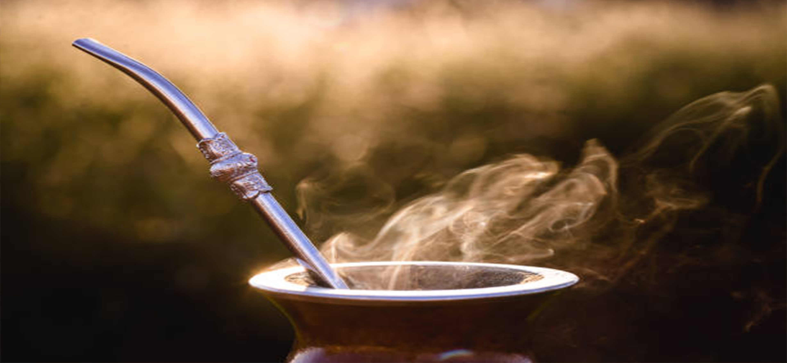

El origen del mate
El mate es una bebida tradicional de América del Sur Su origen se remonta a tiempos
precolombinos,
siendo los pueblos guaraníes quienes primero descubrieron y comenzaron a consumir la yerba mate.
Con la llegada de los colonizadores españoles en el siglo XVI, el consumo de mate se extendió más allá de
las
comunidades indígenas. Los jesuitas, en particular, jugaron un papel crucial en la difusión del mate al
establecer
plantaciones y desarrollar métodos de cultivo más eficientes.
Por esta razón, a veces se hace referencia al mate como "té de los jesuitas".
A lo largo de los siglos el mate se ha consolidado como una parte integral de la cultura y la
vida cotidiana en muchas regiones.
Yerba Mate vs. Mate: ¿Cuál es la Diferencia?
Aunque a menudo se usan indistintamente, "yerba mate" y "mate" no son lo mismo, y entender la diferencia
es esencial para apreciar esta tradición sudamericana.
Yerba Mate: La yerba mate es una planta originaria de América del Sur,
específicamente de las regiones subtropicales de Argentina, Paraguay, Uruguay, Brasil y algunas zonas de
Bolivia y Chile.
Su nombre científico es Ilex paraguariensis. Las hojas de esta planta son recolectadas, secadas y trituradas
para
ser utilizadas en la preparación de una bebida también conocida como mate. La yerba mate contiene cafeína,
teobromina
y otros compuestos beneficiosos, y es conocida por sus propiedades energizantes y saludables.
Mate: se refiere tanto a la bebida preparada con las hojas de Yerba Mate como al recipiente en el cual se sirve. La bebida se prepara colocando yerba mate en el mate (recipiente), añadiendo agua caliente (sin llegar a hervir), y sorbiendo el líquido a través de una bombilla, que es una especie de sorbete metálico con un filtro en la base para evitar que pasen las hojas.
Leyenda de la Yerba Mate El mate está rodeado de numerosas leyendas que reflejan su importancia
cultural. Una de las leyendas guaraníes más conocidas cuenta que dos diosas, Yari y Araí, descendieron a la
tierra y fueron acogidas por un anciano. Como agradecimiento, Yari convirtió una planta en yerba mate para
que el anciano pudiera disfrutar de una bebida que le brindara fuerza y compañía.
Otra historia popular es la del cazador guaraní que, tras salvar a una anciana en el bosque, recibió de
ella
la planta de yerba mate como recompensa. Estas leyendas destacan el mate no solo como bebida, sino también
como símbolo de generosidad y amistad.